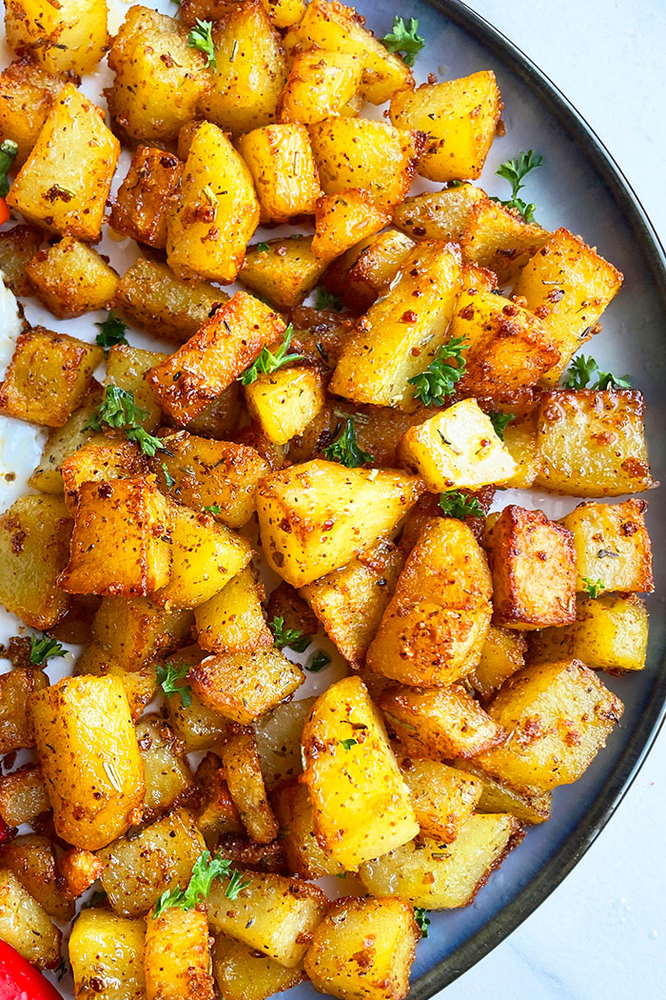

Breakfast Potatoes

Description
To be completely honest, we have these for dinner far more often than we have then for breakfast, but they are delightful all the same.
Ingredients
- 2 pounds baby red potatoes
- 1 medium yellow onion, diced
- 1 medium bell pepper, diced
- 1 tablespoon olive oil
- 1 teaspoon garlic powder
- 1/2 teaspoon salt, or to taste
- 1/2 teaspoon ground black pepper, or to taste
Instructions
- Preheat the oven to 425 degrees F (220 degrees C). Line a baking sheet with parchment paper.
- Cut potatoes into 1 1/2-inch wedges. Place in a large bowl with onion and bell pepper. Add olive oil, garlic powder, salt, and pepper; mix well. Place mixture onto the prepared baking sheet.
- Roast in the preheated oven, stirring halfway through, until potatoes are tender, about 30 minutes.
- Turn on the broiler and broil until crispy, checking often to prevent burning, 2 to 5 minutes.